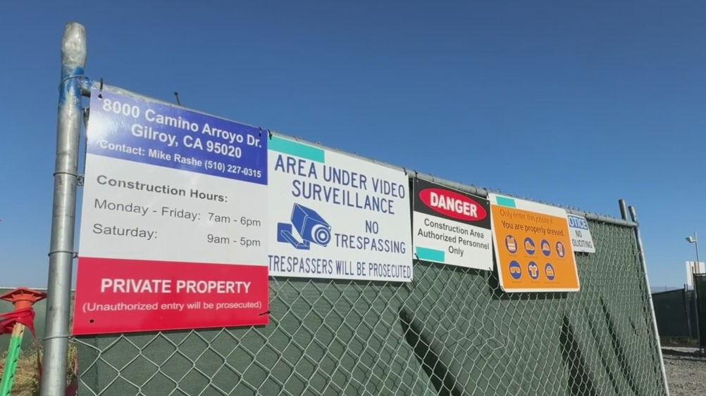
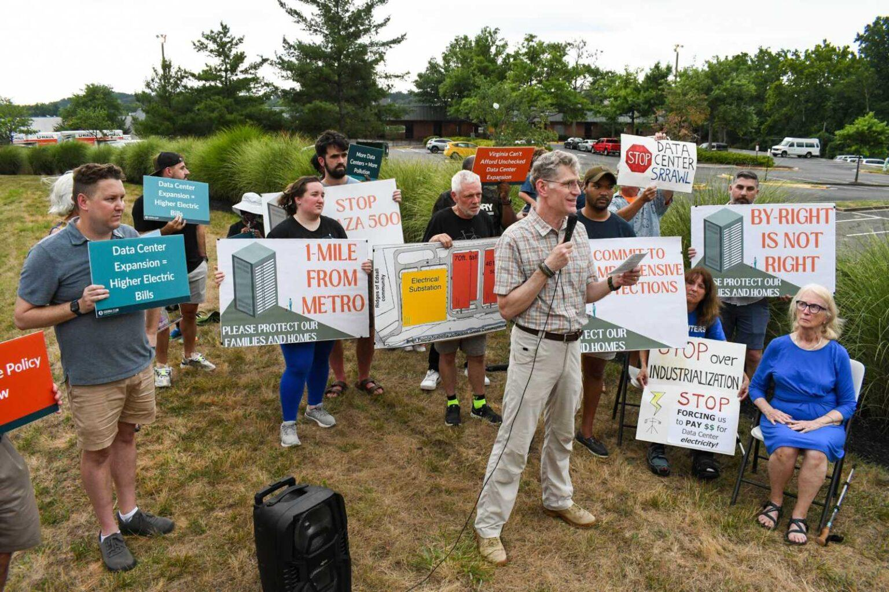
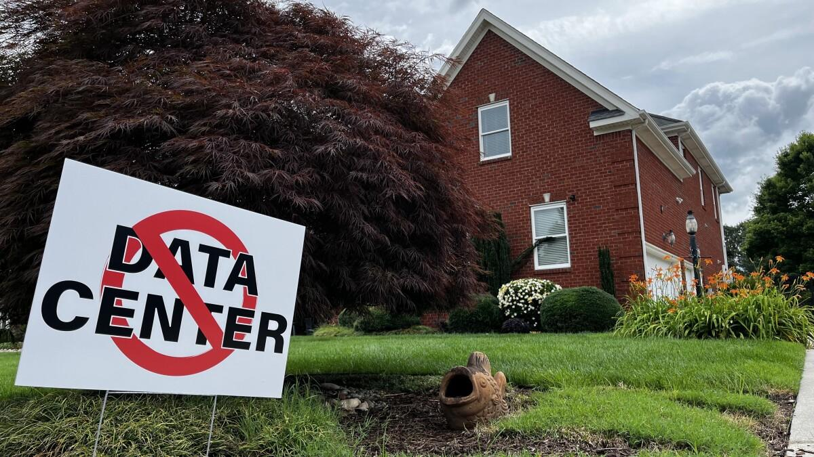

2026년 중간선거에서 미국 민주당이 상하원 + 주지사 모두 압승을 거뒀고, 이제 미국 민주당의 데이터센터 규제안이 주목을 받고 있다.
증시를 폭락시킬 정도로 심각한 미국 민주당의 데이터센터 규제 공약들을 알아보자.
1. 데이터센터 지을 때 '우리 데이터센터 지을게요' 라고 반드시 당국에 신고하고 주변에 알려라
엥? 데이터센터 짓는다고 안 알리고 지어도 돼요?
지금까지는 됐다. 캘리포니아주 길로이(Gilroy)의 데이터센터의 사례가 있다.
이 데이터센터는 주변 주민들한테 말 없이 데이터센터를 지은 다음, '이미 지었는데 너네가 어쩌쉴??????' 시전했다.

출처 : NBC Bay Area: 주민들이 공사 시작 후에야 알게 됐다는 보도
2. 정부와 비밀계약을 맺어서 정보를 꽁꽁 숨긴 채 데이터센터 짓지 마라. 계약 내용 공개해라
2026년 보도에 따르면, 미국 버지니아주에서 데이터센터가 들어섰거나 추진 중인 지방정부 31곳을 조사했더니 25곳에서 비밀유지계약(NDA)이 확인됐다.
-> 이 데이터센터는 넓이가 어느 정도인지, 전기와 물을 얼마나 쓰는지, 어느 회사의 것인지 등 모든 정보를 외부에 차단한 채 일단 데이터센터를 완공하고 본 것.
1번 규제 사례와 결합해 보면, 지역주민 입장에서는 어느날 집 근처에서 뚝딱뚝딱 하길래 머지? 했는데
알고 보니 '짜잔~ 너네 집을 똥값 만들 데이터센터였습니다~' 였다는 것
출처 : Virginia Mercury: Data centers, non-disclosure agreements and democracy
3. 전기료와 수도료를 지역 주민들에게 떠넘기지 마라. 주민들이 쓸 인프라에 기생하지 마라.
대표적인 사례로 조지아주 페이엣빌의 QTS 데이터센터 사건이 있다.
2026년 5월 POLITICO 산하 E&E News 보도에 따르면, 인근 주민들이 수도 수압이 떨어진다고 항의하면서 조사가 시작됐는데
알고 보니 데이터센터에 연결된 대형 수도관 두 개가 어느 새 지어져서 물을 끌어가고 있었고, 이에 대해 당국은 몰랐다고 한다.
즉 잘 돌아가던 기존 인프라에 기생해서 쌀먹하다가 딱 걸린 것.
조사 결과 무려 2,900만 갤런의 물에 대한 요금이 누락된 것으로 드러났다.
출처 : E&E News / POLITICO: A data center drained 30M gallons of water unnoticed
4. 거주지 근처에 데이터센터 짓지 마라

이 건은 사례가 진짜 존나게 많다.
1. 버지니아주 페어팩스: 집에서 불과 '20m' 떨어진 데이터센터 계획
2026년 8월, 버지니아주 페어팩스 카운티에서 'Plaza 500'이라는 데이터센터 개발계획이 알려졌다.
-
사업 규모: 약 34에이커(13.8헥타르)
-
건설 계획: 데이터센터 2개와 관련 변전소
-
최근접 주택 부지 경계까지 거리: 약 67피트(20.4m)
...???? 우리 집에서 20미터 떨어진 곳에 데센을 짓는다고요?
근데 더 놀라운 점은 기존 토지이용 규정상 데이터센터 건설이 문제가 없었다는 것이다.
2. 버지니아주 체서피크

2025년, 체서피크시의 주택가 인근에 약 3만 2,500㎡ 규모의 데이터센터를 건설하려는 계획이 나왔다.
특정 주민의 집에서는 100미터도 떨어지지 않은 곳이었다.
당연하지만 극심한 반대에 부딪혔고, 시의회 투표에서 만장일치로 부결됐다고 한다.
출처 : FFXnow: 시민단체의 Plaza 500 반대 결의 보도
WHRO 공영방송: Chesapeake City Council rejects data center proposal
결론적으로 보자면, 길에서 똥오줌 싸지 마라 정도의 매우 상식적인 규제임을 알 수 있다.
그런데 지금까지 왜 저 정도 상식적인 선도 안 지켰냐고?
간단하다.
트럼프 정부의 데이터센터 규제는 너무 약하거나 아예 의미가 없는 수준이었고, 따라서 규제를 어기고 벌금을 내는 편이 더 저렴했으니까.
상식적인데